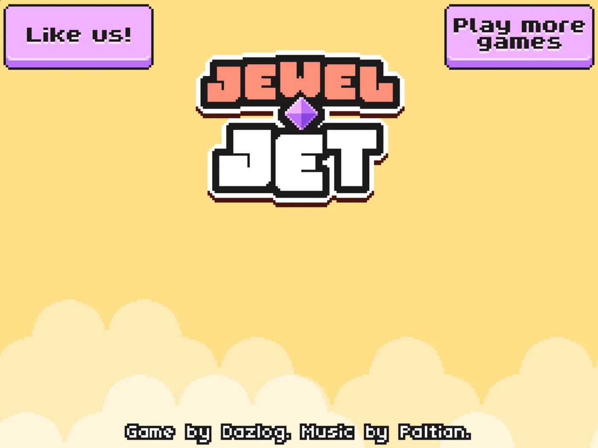
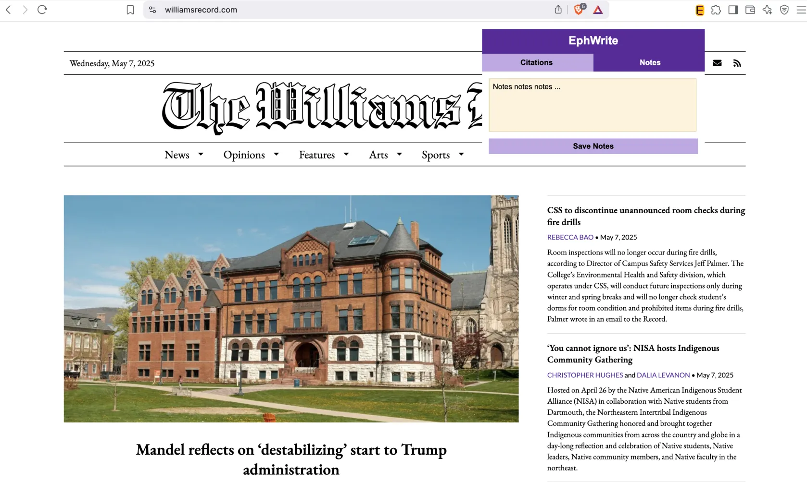

About

I'm a senior at Williams College studying Computer Science, driven by curiosity and a passion for building impactful, scalable systems. I have ve interned twice at Amazon, working on a variety of AI-integrated tools. I enjoy applying theoretical foundations to real-world problems and am passionate about developing inclusive, accessible technology.
Experience
 Amazon – SDE Intern (2024)
Amazon – SDE Intern (2024)
- Built a product page simulator using Python and Streamlit to prototype AI-driven attribute edits.
- Created a search simulation tool using LLMs + Elasticsearch across 6K+ products.
- Improved metadata accuracy by 15% and reduced post-deployment testing needs.
Amazon – SDE Intern (2023)
- Developed Python schema tools to speed up ML pipeline integration for 20+ stakeholders.
- Worked with AWS SageMaker, Docker, and Java systems for seamless deployments.
Projects
Peer-to-Peer Textbook Marketplace
Designed a Napster-style system with a central directory server and peer communication for efficient book discovery and trading.
Virtual Memory Manager
Created a virtual memory pager that handled page faults and dynamic allocation for efficient multi-program support.
Design Sprints (CS376)
DS1: Healthcare Appointment Usability
Interviewed users about challenges with healthcare appointment systems. Identified pain points and developed personas and journey maps.
DS3: Gesture-Based Game Interface
Designed a computer vision–based rhythm game using Unity and webcam input. Iterated on gesture-action mappings for clarity and responsiveness.
DS5: Amazon Accessibility Audit
Performed an accessibility audit of Amazon for hard-of-hearing users. Aligned redesign suggestions with WCAG and real user interviews.
DS6: EphWrite Chrome Extension
Built a Chrome extension for taking notes and saving citations while browsing. Emphasized intuitive, accessible UI from scratch.
Contact
Email: kap6@williams.edu
Phone: 347-316-2689